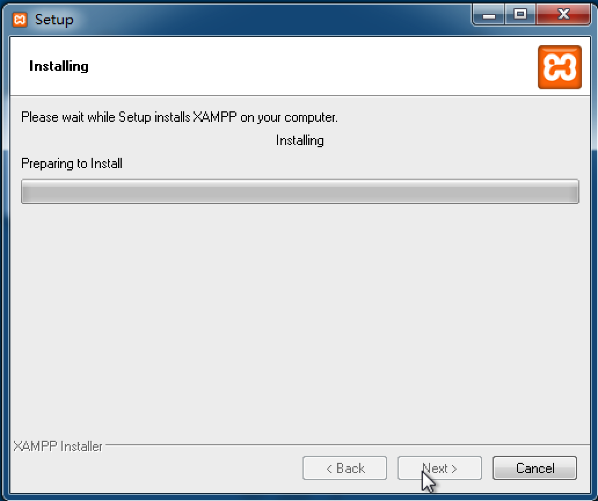
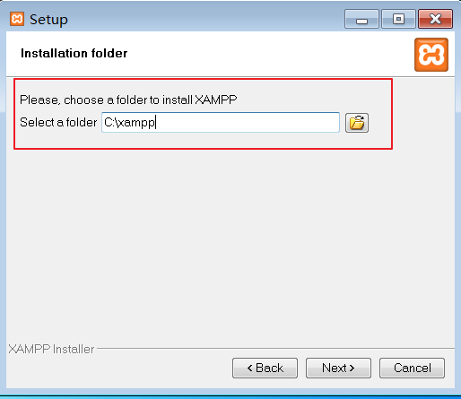
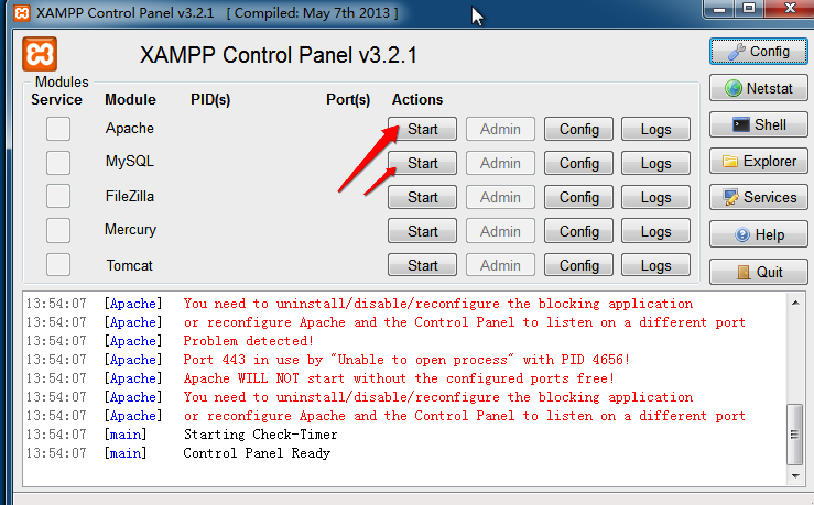
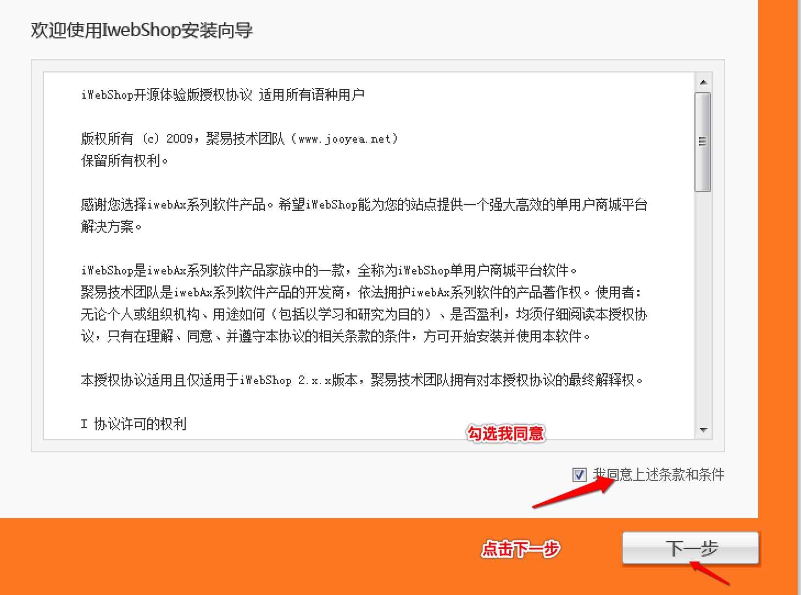

搭建测试环境（重点）
Iwebshop电商网站属于B/S架构
Linux---LNMP
Centos: LNMP---->Linux+Nginx+Mysql+php项目
Nginx：网络服务器
MySQL：数据库服务器
Windows---WAMP
Windows: WAMP---->Windows+apache+Mysql+php项目
Apache：网络服务器
MySQL：数据库服务器
使用xampp一键安装，安装时注意：
xampp的安装及配置
xampp-win32-1.8.2-0-VC9-installer.exe
双击xampp进入安装界面

一路点击next 

- 勾选start按钮 开启MySQL和Apache服务器

- 直到变成绿色 证明安装成功

端口冲突启动失败
端口号---- Apache 即http/https默认为80/443，如果Apache启动失败，可能是端口被占用，点击Config,修改httpd.conf中的80端口（如修改为8080）和httpd-ssl.conf中的443端口（如修改为4433）；

端口号---MySQL默认端口号为3306，启动失败点击Config,修改my.ini中的3306端口（如修改为33066），然后重试。
项目安装及访问
xampp安装时，默认一键安装即可，安装成功后，会在C盘根目录自动生成一个xampp的文件夹
把iwebshop的项目源码解压后把iwebshop文件夹复制到xampp文件夹下的htdocs文件夹中
用浏览器打开http://ip:端口号/iwebshop进行安装iwebshop项目
安装时注意：
1. 数据库：账号：root，密码为空
2. iwebshop后台管理员账号：admin，密码123456
点击我同意，点击下一步 
按图填写，选择完整安装点击下一步进入安装

安装成功，页面

安装成功后访问地址：
前台：http://ip:端口号/iwebshop 后台：http://ip:端口号/iwebshop/index.php?controller=systemadmin&action=index前台演示

后台演示